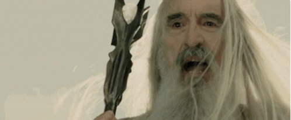

Saruman, also called Saruman the White, later Saruman of Many Colours, is a fictional character in J. R. R. Tolkien's fantasy novel The Lord of the Rings. He is the leader of the Istari, wizards sent to Middle-earth in human form by the godlike Valar to challenge Sauron, the main antagonist of the novel. He comes to desire Sauron's power for himself, so he betrays the Istari and tries to take over Middle-earth by force from his base at Isengard.
